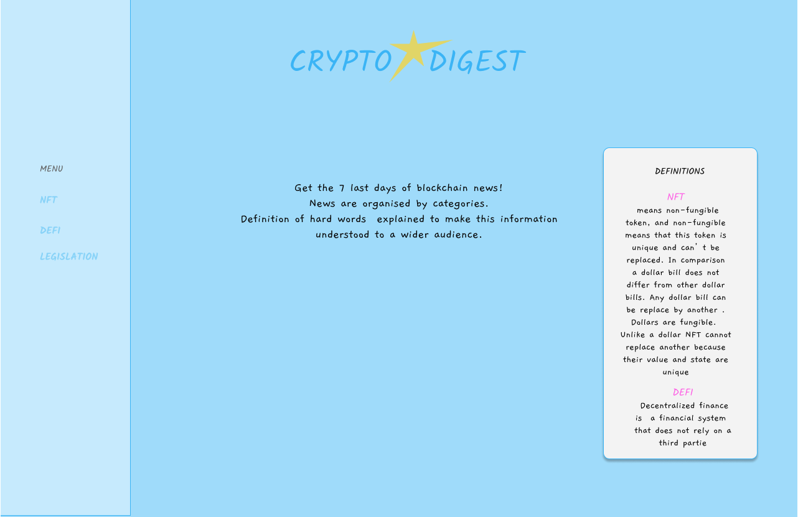
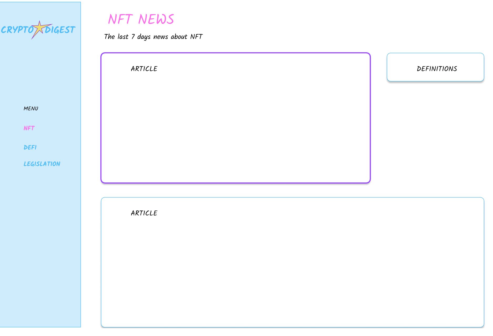

Landing page of my future website! I picked a cheerful theme because we need colors in this world!

This webpage is organized in topic because not everybody likes DEFI 🙃 ! The idea is for this website to deal only with the last 7 days of news!